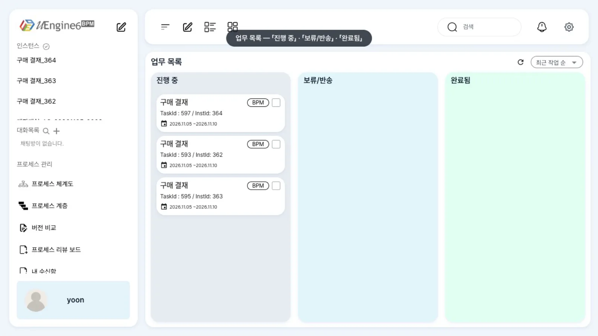
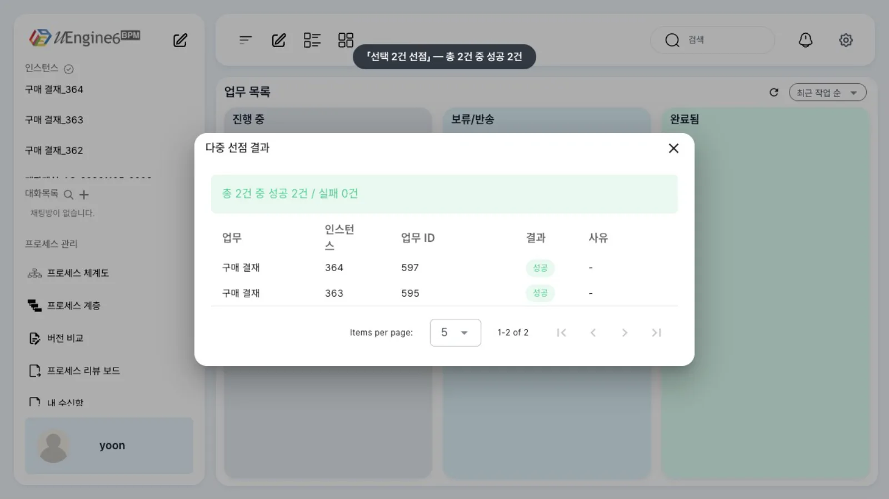
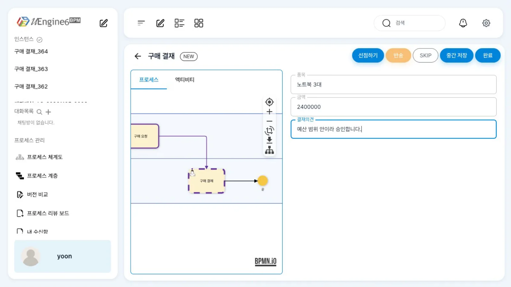
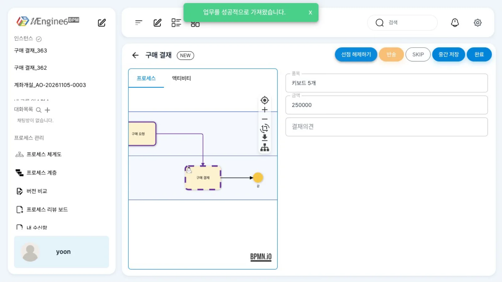

업무 목록(
/todolist)은 내 작업과 내 그룹의 작업을 칸반으로 보여 줍니다. 카드를 골라 한꺼번에 선점하고, 작업 화면에서 현재 단계를 확인하고 입력 칸을 채워 완료합니다.
무엇을 · 왜#
사람 작업이 생기면 엔진은 작업 항목(work item) 한 행을 bpm_worklist에 씁니다. 업무 목록은 로그인한 사람에게 해당하는 행을 모아 보여 줍니다(Camunda Tasklist와 같은 역할).
| 누구의 작업인가 | 조건 | 카드 |
|---|---|---|
| 내 작업 | 담당자(endpoint)가 나 |
바로 열어 완료 |
| 그룹 작업 | 담당자 없음 + 레인의 그룹이 내 Keycloak 그룹 + 선점 방식 | 선점해야 내 것 |
작업 항목의 상태는 NEW(생김) → CONFIRMED·RUNNING(열림·선점) → COMPLETED로 바뀌고, 반송·SKIP이면 SUSPENDED·SKIPPED가 됩니다(반송과 SKIP).
이 장의 예제
프로세스 튜토리얼/업무목록/구매결재 — 최구매 「구매 요청」 → 팀장 레인(그룹 구매결재 · 역할 purchase-lead · 선점) 「구매 결재」.
「구매 결재」는 변수 품목·금액을 아규먼트로 받아(in) 보여 주고, 「결재의견」을 변수로 돌려줍니다(out). 녹화 전에 최구매가 키보드·모니터·노트북 세 건을 요청해 두었습니다.
따라 하기#
- 업무 목록. 윤팀장(
yoon)으로 로그인하면 「업무 목록」에 「진행 중」「보류/반송」「완료됨」 칸이 있고, 「진행 중」에 「구매 결재」 카드 세 장이 있습니다. 카드에는 작업 이름,BPM칩,TaskId : <작업 번호> / InstId: <인스턴스 번호>, 기간이 있습니다.
업무 목록 - 정렬과 새로고침. 오른쪽 위 「최근 작업 순」으로 정렬을 바꾸고, 새로고침 아이콘으로 목록을 다시 읽습니다. 이 브랜치에는 실시간 갱신이 없어 새 작업은 새로고침해야 보입니다.
- 여러 장 선점. 카드 두 장의 체크 상자를 선택하면 위쪽 버튼이 「선택 2건 선점」으로 바뀝니다. 누르면 「다중 선점 결과」에 「총 2건 중 성공 2건」이 뜹니다.

선택 2건 선점 - 작업 화면. 카드를 누르면
/todolist/<작업 번호>가 열립니다. 위에 작업 이름과 상태 칩(「NEW」), 버튼 「선점하기」「반송」「SKIP」「중간 저장」「완료」가 있고, 왼쪽 「프로세스」 탭은 현재 단계를 그림에 표시합니다. 오른쪽 아규먼트 칸의 「품목」(노트북 3대)·「금액」(2400000)은 in 매핑으로 변수에서 채워져 있습니다.
작업 화면 - 완료. 「결재의견」을 적고 「완료」를 누릅니다. 화면이 인스턴스(「Completed」, 「해당 업무 완료」)로 넘어가고, 업무 목록으로 돌아가면 그 카드가 사라집니다.
- 작업 화면의 「선점하기」는 쓰지 않기. 아직 그룹 작업인 카드를 열어 「선점하기」를 누르면 「업무를 성공적으로 가져왔습니다.」가 뜨고 버튼이 「선점 해제하기」로 바뀝니다. 이 브랜치에서는 이때 담당자를 이메일(
yoon@gaon.example)로 저장해서, 이 작업은 윤팀장의 업무 목록에서 사라집니다. 그룹 작업은 목록의 「선택 N건 선점」으로 가져오세요.
작업 화면의 선점하기 - 끝난 작업 보기. 「완료됨」 칸은 이 브랜치에서 비어 있습니다. 끝난 작업은 관리자 화면
/admin/<인스턴스 번호>의 「히스토리」 탭에서 봅니다(인스턴스 찾고 살피기).
설정 레퍼런스#
화면 ↔ API#
| 화면 | API (process-service, Authorization: Bearer) |
|---|---|
| 업무 목록 읽기 | GET /worklist/search/findToDo |
| 작업 화면 열기 | GET /work-item/{taskId} |
| 「선택 N건 선점」 | POST /instance/multi-claim (ESB 봉투, 레인과 담당자) |
| 「선점하기」(쓰지 말 것, 알려진 제약) | POST /work-item/{taskId}/claim |
| 「완료」 | POST /work-item/{taskId}/complete {"parameterValues": {…}} |
| 「중간 저장」 | POST /instance/{instId}/variable/{이름} (아래 제약) |
| 「반송」「SKIP」 | POST /work-item/{taskId}/return · /skip (반송과 SKIP) |
작업 항목 테이블 bpm_worklist의 주요 열#
| 열 | 뜻 |
|---|---|
task_id · inst_id |
작업 번호 · 인스턴스 번호(카드의 TaskId · InstId) |
title · trc_tag |
작업 이름 · 정의 안의 활동 ID |
endpoint |
담당자 사용자 이름. 그룹 작업은 선점 전까지 비어 있음 |
status |
NEW · CONFIRMED · COMPLETED · SUSPENDED · SKIPPED … |
tool |
업무 화면 종류: 기본, formHandler:<폼 id>, urlHandler:<주소> |
「구매 결재」 작업(발췌)#
변수 값을 아규먼트에 미리 넣는 in 매핑과 의견을 돌려주는 out 매핑입니다.
{"_type": "org.uengine.kernel.HumanActivity", "role": "팀장",
"eventSynchronization": {"eventType": "", "attributes": [
{"name": "품목", "className": "String"}, {"name": "금액", "className": "Integer"}, {"name": "결재의견", "className": "String"}],
"mappingContext": {"mappingElements": [
{"argument": {"text": "품목"}, "direction": "in", "variable": {"name": "품목"}},
{"argument": {"text": "금액"}, "direction": "in", "variable": {"name": "금액"}},
{"argument": {"text": "결재의견"}, "direction": "out", "variable": {"name": "[Arguments].결재의견"}}]}}}
알려진 제약#
이 브랜치에서 확인한 것
- 「완료됨」 칸이 비어 있습니다. 끝낸 작업은 목록에서 사라질 뿐 「완료됨」에 쌓이지 않습니다. 관리자 화면 히스토리를 보세요.
- 「중간 저장」은 입력값을 작업이 아니라 프로세스 변수로 보내고, 다시 열면 칸이 비어 있습니다. 작성 중인 값을 보관하는 용도로 쓰지 마세요.
- 실시간 갱신이 없습니다(Kafka 모드라 SSE
/events/stream이 없음). 새로고침 아이콘을 누르세요. - 작업 화면의 「선점하기」(
POST /work-item/{taskId}/claim)는 담당자를 이메일로 저장합니다. 업무 목록은 사용자 이름으로 찾으므로 그 작업은 목록에서 사라집니다(녹화에서 확인: 선점 뒤endpoint = yoon@gaon.example). 「선택 N건 선점」을 쓰세요. 이미 이렇게 된 작업은 관리자가 REST API로 담당자를 고쳐야 합니다. - 「선택 N건 선점」으로 가져온 뒤에도 작업 화면에 「선점하기」 버튼이 남아 보입니다. 누르지 마세요.
- 「선택 N건 위임」은 게이트웨이 라우트(
/work-items/**)가 없어 아무 일도 일어나지 않습니다. 위임은 REST API로 하세요. - 「선택 N건 선점」은 시연 스택에서 프런트 패치와
esb.inbound-unwrap.enabled: true로 수정해 녹화했습니다(레인과 담당자 알려진 제약).
확인 문제#
최구매가 방금 요청한 결재가 윤팀장의 업무 목록에 보이지 않습니다. 먼저 무엇을 해 보나요?
새로고침 아이콘을 누릅니다. 이 브랜치의 업무 목록은 실시간으로 갱신되지 않습니다. 그래도 없으면 레인의 그룹이 윤팀장의 Keycloak 그룹과 일치하는지 확인합니다.
그룹 작업을 처리하기 전에 무엇을 해야 하나요? 작업 화면의 「선점하기」를 눌러도 되나요?
선점해야 합니다. 그룹 작업은 담당자가 없어 선점한 뒤에 내 작업이 됩니다. 이 브랜치에서는 카드를 골라 「선택 N건 선점」을 누르세요. 작업 화면의 「선점하기」는 담당자를 이메일로 저장해 작업이 목록에서 사라집니다.
오늘 끝낸 결재를 다시 보려면 어디로 가나요?
관리자 화면 /admin/<인스턴스 번호>의 「히스토리」 탭입니다. 이 브랜치의 「완료됨」 칸은 비어 있습니다.